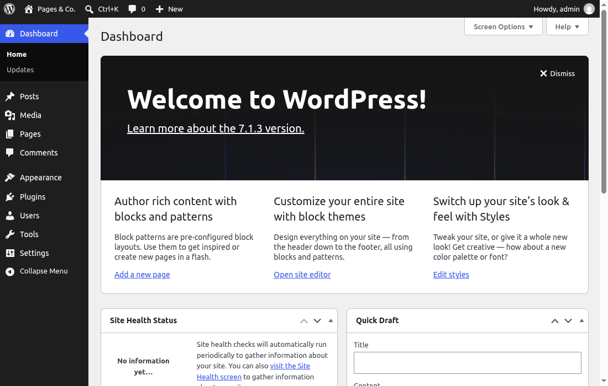
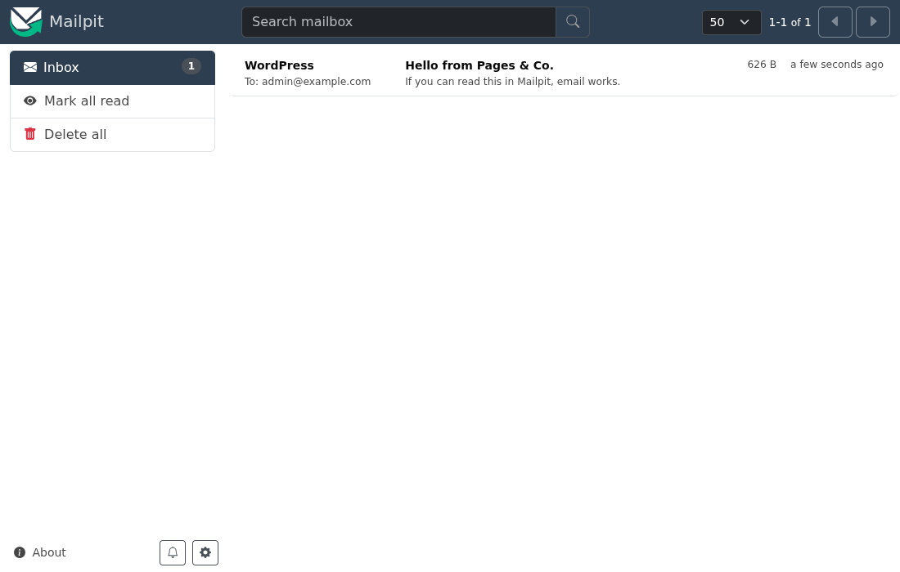

🐳 Lesson 1.2: Your Local Development Environment
Professional WordPress developers never write code on the live site. They work on a copy that runs on their own computer, where they can break things, read every error and try again in seconds. In this lesson you set up that copy for Pages & Co.: WordPress 7.1 on PHP 8.5 and MySQL 9.7, running in Docker containers, with WP-CLI to control it from the command line, a debug log that catches every error, and a mail catcher that keeps test emails off the internet. It is the site every remaining lesson builds on, so take your time and get it right once.
🎯 Learning Objectives
By the end of this lesson, you will be able to:
- Install Docker and start the course's Docker Compose project: WordPress, MySQL, WP-CLI and Mailpit
- Install WordPress from the command line with WP-CLI and use the
wpshortcut for everyday tasks - Fix the Linux and WSL file-ownership problem so your editor can save into
wp-content/ - Find and read PHP errors on the page and in
wp-content/debug.log, and catch WordPress email in Mailpit - Start, stop and reset the site safely, and know when
wp-envor WordPress Playground is the better tool
In This Lesson
🧩 What You Are Setting Up
WordPress needs a web server with PHP and a MySQL database. You could install Apache, PHP and MySQL directly on your computer, as you may have done in the Foundations courses, but then your computer's versions decide what you test against, and the next project needs different ones. Docker runs each piece in its own container: a small, isolated Linux system started from an image that contains exactly one version of the software. Docker Compose starts several containers together from one file, compose.yaml, and connects them on a private network. Everyone taking this course runs the same images, so your site behaves like the one the lessons were tested on, on Windows, macOS and Linux alike.
| Service | Image | What it does |
|---|---|---|
wordpress | wordpress:7.1-php8.5-apache | Apache with PHP 8.5.12 and WordPress 7.1.3; serves the site on http://localhost:8080 |
db | mysql:9.7 | The database server; your data lives in a Docker volume called db_data |
wpcli | pagesco-wpcli:php8.5, built from wordpress:cli-php8.5 | WP-CLI 2.12, the command-line tool for WordPress; started only when you run a command |
mailpit | axllent/mailpit | A fake mail server with a web inbox on http://localhost:8025 |
💡 Mental model: a food truck, not a restaurant
Installing a server stack on your computer is like building a restaurant kitchen into your home: it works, but it is hard to change and hard to remove. A Docker setup is a food truck you park next to the house. Everything the kitchen needs comes with the truck, you can drive it away (docker compose down) and park an identical one tomorrow, and nothing in the house changes. The one thing that stays in the house is your work: the wordpress/ folder with your theme and plugin is a normal folder on your disk that the truck can reach through a window (a bind mount), so your editor and WordPress see the same files.
📥 Install Docker
Skip this section if docker compose version already prints a version 2 or newer in your terminal (the Docker lessons of PHP Foundations or MySQL Foundations may have set you up). Otherwise follow the part for your system. Docker Desktop is free for personal use, education and small businesses; larger companies need a paid subscription, so check if you install it on a work computer.
🪟 Windows 10 and 11: WSL 2 plus Docker Desktop
- Install WSL 2 with Ubuntu. Open PowerShell as administrator, run the command below, restart when asked, and create a Linux user name and password when Ubuntu starts for the first time.
wsl --install- Install Docker Desktop for Windows with the WSL 2 backend (the installer's default). Start it, open Settings > Resources > WSL integration and switch on your Ubuntu distribution.
- From now on, open the Ubuntu app for every command in this course, and keep your project inside the Linux file system (your Linux home folder,
~), not under/mnt/c/. Files on the Windows drive work, but every page load then crosses from Linux to Windows and WordPress becomes many times slower.
Inside Ubuntu you are on Linux: follow the Linux steps in "Linux and WSL: Run WordPress as You" below as well.
🍎 macOS
Install Docker Desktop for Mac (pick Apple silicon or Intel to match your Mac), start it once from Applications and wait until it says it is running. All the course images run natively on both kinds of Mac. Use the Terminal app for the commands.
🐧 Linux
Install Docker Engine and the Compose plugin from Docker's own package repository by following docs.docker.com/engine/install for your distribution (the packages your distribution ships are often too old). Then let your user run Docker without sudo, and log out and back in for it to take effect:
sudo usermod -aG docker "$USER"Check the installation
docker --version
docker compose version
docker run --rm hello-worldOutput (your version numbers will differ)
Docker version 29.6.2, build ...
Docker Compose version v5.3.1
Hello from Docker!
This message shows that your installation appears to be working correctly.
...Write docker compose with a space. The old separate program docker-compose, with a hyphen, is retired; tutorials that use it, and the version: '3.8' line they put at the top of the file, are from before Compose version 2.
📦 Get the Starter Project
The course ships a ready-made Compose project, pagesco-dev. Download pagesco-dev.zip and unpack it in your home folder, or do both from the terminal (on Ubuntu and WSL, sudo apt install unzip first if unzip is missing):
cd ~
curl -LO https://rays-php-wordpress.netlify.app/downloads/pagesco-dev.zip
unzip pagesco-dev.zip
cd pagesco-devFrom here on, your project folder means pagesco-dev, and every docker compose command runs inside it. (You can browse the same files online in downloads/pagesco-dev/.) This is what you unpacked:
pagesco-dev/
compose.yaml the four services
config/apache-8080.conf Apache also listens on port 8080 inside the container
config/php-dev.ini development PHP settings: show every error, 64 MB uploads
config/wpcli.Dockerfile the WP-CLI image: official image + three fixes
config/mariadb-local.sh lets "wp db ..." talk to MySQL 9.7's dev certificate
config/wp-cli.yml WP-CLI settings (used inside the image)
config/quiet-wp-cli-deprecations.php hides WP-CLI's own PHP 8.5 notices, not yours
config/mailpit-smtp.php a must-use plugin you install later in this lesson
config/compose.linux.yaml Linux and WSL only: run WordPress as your userOpen compose.yaml and read it once; you already know YAML's shape from configuration files, and every line is commented or obvious. The wordpress service, shortened:
wordpress:
image: wordpress:7.1-php8.5-apache
depends_on:
db:
condition: service_healthy
ports:
- "8080:8080"
environment: *wp-env
volumes:
- ./wordpress:/var/www/html
- ./config/apache-8080.conf:/etc/apache2/conf-enabled/zz-port-8080.conf:ro
- ./config/php-dev.ini:/usr/local/etc/php/conf.d/zz-dev.ini:roports: "8080:8080"connects port 8080 on your computer to port 8080 in the container. Most Docker tutorials map8080:80. The course serves 8080 inside the container too, because WordPress sometimes calls its own address (scheduled tasks, Site Health, the REST self-test): with8080:80those calls tohttp://localhost:8080from inside the container reach nothing../wordpress:/var/www/htmlis the bind mount: the folderwordpress/next tocompose.yamlis the WordPress root inside the container. The first start fills it with WordPress, and your theme and plugin will live inwordpress/wp-content/.environment: *wp-envreuses the block of settings at the top of the file: the database name, user and password (wordpress/wordpress-dev-only, fine for a site that only exists on your computer),WORDPRESS_DEBUG: 1, and extra lines forwp-config.php. You will see where they end up in the debugging section.depends_on ... service_healthywaits until MySQL answers before WordPress starts, so you never see "Error establishing a database connection" just because the database was still booting.
🐧 Linux and WSL: Run WordPress as You
macOS and Windows users who keep the project on the Windows drive: skip this section. Docker Desktop on those systems makes files from the container appear as yours automatically. On Linux, and inside WSL (where Docker Desktop's containers write straight into your Linux file system), the files in a bind mount belong to whichever user the container ran as. The WordPress image runs Apache as www-data, user number 33, and creates every WordPress file as that user. The result, measured on WSL 2 with Docker Desktop:
ls -ln wordpress/wp-content
mkdir wordpress/wp-content/mu-pluginsError (Linux and WSL, without the fix)
total 12
-rw-r--r-- 1 33 33 28 Jan 8 2012 index.php
drwxr-xr-x 3 33 33 4096 Aug 18 16:42 plugins
drwxr-xr-x 5 33 33 4096 Aug 12 07:45 themes
mkdir: cannot create directory ‘wordpress/wp-content/mu-plugins’: Permission deniedOwner 33, group 33, and only the owner may write. Your user (usually number 1000) can read the files but not save a theme, a plugin or even a new folder. You could hand everything back to yourself with sudo chown, but WordPress would then be unable to write uploads and the debug log, and every file it creates later would again belong to 33. The clean fix is to run the wordpress and wpcli containers as your own user, so everyone writes files as the same person: you. The starter ships the setting in config/compose.linux.yaml. Do this once, in the project folder, before the first start:
printf 'PAGESCO_UID=%s\nPAGESCO_GID=%s\n' "$(id -u)" "$(id -g)" > .env
cp config/compose.linux.yaml compose.override.yaml
mkdir wordpress
cat .envOutput (your numbers may differ)
PAGESCO_UID=1000
PAGESCO_GID=1000What the three steps do:
.envholds your user and group numbers (id -u,id -g). Docker Compose reads a file with that name automatically and fills in${PAGESCO_UID}wherevercompose.yamlor an override uses it.compose.override.yamlis another name Compose looks for: it merges it overcompose.yamlon every command. Ours adds one line to two services,user: "${PAGESCO_UID}:${PAGESCO_GID}". Apache in the official image is happy to run as any user, because it serves port 8080, not one of the ports below 1024 that need root.mkdir wordpresscreates the mount folder as you. If Docker has to create it, it creates it as root, and the first start then fails to unpack WordPress into it (tar: ./index.php: Cannot open: Permission deniedindocker compose logs wordpress).
After the first start in the next section, check the result: the same listing now shows your number, and mkdir works.
ls -ln wordpress/wp-content
mkdir wordpress/wp-content/mu-pluginsOutput (Linux and WSL, with the fix)
total 16
-rw-r--r-- 1 1000 1000 28 Jan 8 2012 index.php
drwxr-xr-x 3 1000 1000 4096 Aug 18 16:42 plugins
drwxr-xr-x 5 1000 1000 4096 Aug 12 07:45 themes
drwxr-xr-x 3 1000 1000 4096 Oct 25 13:36 uploads⚠️ Already started without the fix?
Then wordpress/ is full of files owned by 33. You do not need sudo to repair it: let a container, which runs as root when you ask, give them to you, then add the two files and recreate the containers.
docker compose run --rm --user root wpcli chown -R "$(id -u):$(id -g)" /var/www/html
printf 'PAGESCO_UID=%s\nPAGESCO_GID=%s\n' "$(id -u)" "$(id -g)" > .env
cp config/compose.linux.yaml compose.override.yaml
docker compose up -dYour site, database and content stay as they were; only the owner of the files and the user the containers run as change. (Tested on the course setup: after these four commands WordPress, WP-CLI and your editor all write to wordpress/ again.)
🚀 Start and Install WordPress
In the project folder, start the services in the background (-d, "detached"). The first time, Docker downloads the images, about a gigabyte, which takes a minute or a few depending on your connection; later starts take seconds.
docker compose up -d
docker compose psOutput (your times will differ)
...
Container pagesco-db-1 Healthy
Container pagesco-wordpress-1 Starting
Container pagesco-wordpress-1 Started
NAME IMAGE COMMAND SERVICE CREATED STATUS PORTS
pagesco-db-1 mysql:9.7 "docker-entrypoint.s…" db 16 seconds ago Up 15 seconds (healthy) 3306/tcp, 33060/tcp
pagesco-mailpit-1 axllent/mailpit:latest "/mailpit" mailpit 16 seconds ago Up 15 seconds (healthy) 0.0.0.0:8025->8025/tcp, [::]:8025->8025/tcp
pagesco-wordpress-1 wordpress:7.1-php8.5-apache "docker-entrypoint.s…" wordpress 15 seconds ago Up 7 seconds 0.0.0.0:8080->8080/tcp, [::]:8080->8080/tcpThree services are up; wpcli is not in the list because it only runs when you call it. The container names start with pagesco, the project name set at the top of compose.yaml. WordPress's files are now in wordpress/, but the database is empty: WordPress is not installed yet. If you opened http://localhost:8080 now, you would land on the famous five-minute installer. Install from the command line instead, with the same settings every lesson assumes:
docker compose run --rm wpcli wp core install --url=http://localhost:8080 --title="Pages & Co." --admin_user=admin --admin_password=password --admin_email=wordpress@example.com --skip-email
docker compose run --rm wpcli wp rewrite structure '/%postname%/'Output (the first run also builds the WP-CLI image; its build lines are left out)
Success: WordPress installed successfully.
Success: Rewrite structure set.
Success: Rewrite rules flushed.docker compose run --rm wpclistarts a one-offwpclicontainer, runs the command after it and removes the container again (--rm). The first time, Compose builds the course WP-CLI image fromconfig/wpcli.Dockerfile, which takes about a minute.wp core installcreates the database tables, the site title "Pages & Co." and the administrator admin with the password password. That password is only acceptable because this site exists on your computer alone; Lesson 8.4 is about real ones. (These are also the defaults ofwp-env, so the lessons work there too.)wp rewrite structure '/%postname%/'turns on "pretty permalinks":/hello-world/instead of/?p=1. A WP-CLI install leaves the plain style, because the installer cannot test the server from the command line.
Now open http://localhost:8080: the Pages & Co. home page in the default theme, Twenty Twenty-Five, with the "Hello world!" post. Then log in at http://localhost:8080/wp-admin/ as admin / password:

⌨️ WP-CLI and the wp Shortcut
WP-CLI is the official command-line interface for WordPress: almost anything you can do in the admin, and plenty you cannot, is one command. Developers use it constantly, and the lessons use it to show you what WordPress is doing. Typing docker compose run --rm wpcli wp every time gets old fast, so define a shortcut. In bash or zsh (Linux, WSL, macOS):
alias wp='docker compose --progress quiet run --rm wpcli wp'--progress quiet hides Compose's "Container ... Created" lines so you only see WP-CLI's output. To keep the shortcut in new terminal windows, add that line to the end of ~/.bashrc (Linux, WSL) or ~/.zshrc (macOS) and open a new terminal.
Windows PowerShell (only if you run the project from Windows instead of WSL)
function wp { docker compose --progress quiet run --rm wpcli wp @args }Put it in your PowerShell profile (notepad $PROFILE) to keep it. Either way, the shortcut works from the project folder and from any folder inside it, because Docker Compose looks for compose.yaml in the current folder and its parents.
💡 What "wp" means in this course
From here on, every wp ... command in a lesson means "WP-CLI in the course container", typed in your project folder. Each one starts a fresh container, so it takes a second or two. Inside the container the current folder is always the WordPress root, /var/www/html, which is your wordpress/ folder: a file path such as wp eval-file priorities.php means wordpress/priorities.php on your disk, wherever you typed the command. If you use wp-env instead (end of this lesson), type npx @wordpress/env run cli wp ... where the lessons say wp ....
Try it. These outputs are from the course site, which is exactly what you have now:
wp core version --extra
wp eval 'echo "PHP ", PHP_VERSION, "\n";'Output
WordPress version: 7.1.3
Database revision: 61833
TinyMCE version: 4.9110 (49110-20250317)
Package language: en_US
PHP 8.5.12wp option get siteurl
wp option get blogname
wp option get permalink_structureOutput
http://localhost:8080
Pages & Co.
/%postname%/The site title prints as Pages & Co.: WordPress stores the title HTML-escaped, so the ampersand is saved as &. Browsers show a plain "&", but code that reads the option gets the escaped form, which matters when you compare strings or send the title in an email. Lists come out as tables:
wp user list --fields=ID,user_login,user_email,roles
wp theme listOutput
+----+------------+-----------------------+---------------+
| ID | user_login | user_email | roles |
+----+------------+-----------------------+---------------+
| 1 | admin | wordpress@example.com | administrator |
+----+------------+-----------------------+---------------+
+-------------------+----------+--------+---------+----------------+-------------+
| name | status | update | version | update_version | auto_update |
+-------------------+----------+--------+---------+----------------+-------------+
| twentytwentyfive | active | none | 1.5 | | off |
| twentytwentyfour | inactive | none | 1.6 | | off |
| twentytwentythree | inactive | none | 1.7 | | off |
+-------------------+----------+--------+---------+----------------+-------------+wp help lists every command, and wp help option (or any command name) explains one, with examples. The full reference is at developer.wordpress.org/cli/commands.
Remember the self-test? It works here
The port-8080 setup from the starter section is what makes WordPress's calls to itself work. WP-CLI can test the one that matters most, the request that runs scheduled tasks (WP-Cron, Lesson 7.3):
wp cron testOutput
Success: WP-Cron spawning is working as expected.A shell inside the container
Some lessons run ordinary commands such as ls, grep, cat or curl "from the WP-CLI container". That means a shell in the same container, where the current folder is the WordPress root and http://localhost:8080 reaches the site (the container shares the wordpress service's network). Open one with:
docker compose run --rm wpcli shThe prompt changes to /var/www/html $. You can type wp commands here too, without the shortcut, and exit leaves the shell. Try a few, they are the commands lessons show this way:
pwd
ls wp-content/themes
curl -s -o /dev/null -w '%{http_code}\n' http://localhost:8080/Output
/var/www/html
index.php twentytwentyfive twentytwentyfour twentytwentythree
200The three themes that ship with WordPress 7.1, and 200, the HTTP status "OK" for the home page.
🐞 Debugging: WP_DEBUG and debug.log
A live site must never show PHP errors to visitors, so by default WordPress hides them. A development site must show every one, or you write bugs without knowing. WordPress controls this with constants in wp-config.php. The Docker image writes wp-config.php for you from the WORDPRESS_* settings in compose.yaml; open wordpress/wp-config.php and you find lines such as define( 'WP_DEBUG', !!getenv_docker('WORDPRESS_DEBUG', '') );, which read those settings, plus the lines from WORDPRESS_CONFIG_EXTRA. Ask the running site what it ended up with:
wp eval 'var_dump( WP_DEBUG, WP_DEBUG_LOG, WP_DEBUG_DISPLAY, SCRIPT_DEBUG, wp_get_environment_type() );'Output
bool(true)
bool(true)
bool(true)
bool(true)
string(5) "local"| Setting | Value here | What it does |
|---|---|---|
WP_DEBUG | true | Report every PHP error, warning, notice and deprecation, plus WordPress's own "called incorrectly" and "deprecated" messages |
WP_DEBUG_LOG | true | Also write them to wp-content/debug.log |
WP_DEBUG_DISPLAY | true | Also print them in the page (never on a live site) |
SCRIPT_DEBUG | true | Load the unminified versions of core's CSS and JavaScript, readable in the browser's developer tools |
WP_ENVIRONMENT_TYPE | local | Tells WordPress and plugins this is a development copy: it allows application passwords over plain HTTP, turns off pings, and lets your own code behave differently on local (the Mailpit plugin does) |
See it catch a real mistake. Create the folder for must-use plugins (Lesson 1.1: every PHP file in it runs on every request) and a small one with a bug: it uses a variable that was never set. In your editor, save this as wordpress/wp-content/mu-plugins/pagesco-debug-demo.php:
mkdir -p wp-content/mu-plugins<?php
/**
* Plugin Name: Pages & Co. Debug Demo
* Description: Lesson 1.2 demo: a deliberate bug in the page footer.
*/
function pagesco_debug_demo_footer() {
echo '<p class="pagesco-demo">Hello, ' . $pagesco_name . '!</p>';
}
add_action( 'wp_footer', 'pagesco_debug_demo_footer' );(mkdir -p runs in the WP-CLI container shell, or create the folder in your editor; -p means "no error if it already exists".) Reload http://localhost:8080/. At the bottom of the page, just above the greeting, PHP printed a warning, and the greeting has no name. The same warning went into the log, with a timestamp:
http://localhost:8080/Output (the new lines in wordpress/wp-content/debug.log)
[25-Oct-2026 20:55:07 UTC] PHP Warning: Undefined variable $pagesco_name in /var/www/html/wp-content/mu-plugins/pagesco-debug-demo.php on line 8Read it the way you learned in PHP Foundations: the level (Warning), what happened (Undefined variable $pagesco_name), the file inside the container (/var/www/html/... is your wordpress/...) and the line. The log keeps every message, including ones from requests you did not see, such as the editor's background requests, scheduled tasks and REST calls. Watch it live while you work, from the project folder:
tail -f wordpress/wp-content/debug.log(Ctrl+C stops it.) Fix the bug, give the variable a value, and reload: the warning is gone.
<?php
/**
* Plugin Name: Pages & Co. Debug Demo
* Description: Lesson 1.2 demo: a deliberate bug in the page footer, fixed.
*/
function pagesco_debug_demo_footer() {
$pagesco_name = 'reader';
echo '<p class="pagesco-demo">Hello, ' . esc_html( $pagesco_name ) . '!</p>';
}
add_action( 'wp_footer', 'pagesco_debug_demo_footer' );Output (View Source, search for pagesco-demo)
<p class="pagesco-demo">Hello, reader!</p>(esc_html() is WordPress's version of htmlspecialchars(); Lesson 1.3 introduces the whole family.) Delete the demo file; you will write real must-use plugins from Lesson 2.3 on.
rm wp-content/mu-plugins/pagesco-debug-demo.phpTwo more places to look when something is wrong. docker compose logs wordpress shows Apache's log, including each request and anything that went wrong while the container started; add -f to follow it. And when a page shows "There has been a critical error on this website.", the details are always in debug.log.
🧩 Version note: WP-CLI 2.12 on PHP 8.5 outside the course container
WP-CLI 2.12, the current release, has a small incompatibility with PHP 8.5: with WP_DEBUG on it prints Deprecated: Using null as an array offset is deprecated ... php-cli-tools/lib/cli/Colors.php on line 95 after its Success and Error lines. That is WP-CLI's own code, not yours. The course image hides deprecations that come from inside WP-CLI's program file (config/quiet-wp-cli-deprecations.php), and nothing else; if you install WP-CLI natively or use another PHP 8.5 image, you will see the message and can ignore it. On PHP 8.4 it does not appear.
📬 Email with Mailpit
WordPress sends email all the time: new-user notices, password resets, comment notifications, and later your own messages from Pages & Co. On a development site you want those emails caught, never delivered to real people. Mailpit is a mail server that accepts everything and shows it in a web inbox at http://localhost:8025. WordPress just needs to be told to send there, and that is what the must-use plugin in config/mailpit-smtp.php does. Copy it into the folder you created (from the project folder):
cp config/mailpit-smtp.php wordpress/wp-content/mu-plugins/wp plugin list --status=must-useOutput
+--------------+----------+--------+---------+----------------+-------------+
| name | status | update | version | update_version | auto_update |
+--------------+----------+--------+---------+----------------+-------------+
| mailpit-smtp | must-use | | | | off |
+--------------+----------+--------+---------+----------------+-------------+It has two jobs, both done with hooks (Lesson 2.3 explains exactly how): it tells PHPMailer, the library inside wp_mail(), to deliver over SMTP to the mailpit service, but only when the environment type is local; and it replaces the sender address wordpress@localhost, which the mail library rejects as invalid, with wordpress@example.com. Send a test with wp_mail(), WordPress's mail function; it returns true when the message was handed over:
wp eval 'var_dump( wp_mail( "admin@example.com", "Hello from Pages & Co.", "If you can read this in Mailpit, email works." ) );'Output
bool(true)Open http://localhost:8025: the message is in the inbox. Click it to see the headers and the body:
http://localhost:8025 (the newest message)Output
From: WordPress <wordpress@example.com>
To: admin@example.com
Subject: Hello from Pages & Co.
If you can read this in Mailpit, email works.
http://localhost:8025: every email your site sends ends up here and nowhere else.🧑💻 Your Editor
Any code editor works; the course assumes Visual Studio Code because it is free and runs everywhere. Set it up once:
- Open the project folder (File > Open Folder >
pagesco-dev), not a single file. On Windows with WSL, install the WSL extension, then typecode .in the Ubuntu terminal insidepagesco-dev: VS Code opens the Linux folder directly. - Add PHP support. Install a PHP language extension such as PHP Intelephense. Because the project folder contains the whole of WordPress in
wordpress/, it indexes core:add_action,esc_htmland every other WordPress function autocomplete with their parameters and documentation, and a misspelled function name is underlined. - Use tabs for PHP indentation. WordPress's coding standards (Lesson 1.3) indent with tabs. In Settings, search "Insert Spaces" and turn it off for PHP, or let
phpcbf(Lesson 8.1) fix the indentation for you.
The wordpress/ folder holds thousands of core files you must not edit (Lesson 1.1). The ones you will work in are wordpress/wp-content/themes/pagesco/, wordpress/wp-content/plugins/pagesco-books/ and wordpress/wp-content/mu-plugins/.
🔁 Everyday Commands: Start, Stop, Reset
Your site keeps its state between sessions: the files are in wordpress/, the database in the db_data volume. These are the commands you will use, all from the project folder:
| You want to | Run | Files | Database |
|---|---|---|---|
| Start working | docker compose up -d | kept | kept |
| See what is running | docker compose ps | - | - |
| Pause for the day | docker compose stop | kept | kept |
Remove the containers (e.g. after editing compose.yaml) | docker compose down, then up -d | kept | kept |
Apply an edit to compose.yaml | docker compose up -d (recreates what changed) | kept | kept |
| Start over completely | docker compose down -v, delete wordpress/, then the install steps again | deleted | deleted |
-v means "and the volumes": it deletes the database. Use it only when you really want a blank site, and on Linux and WSL keep your .env and compose.override.yaml (and recreate wordpress/ with mkdir before the next up). Lesson 8.4 shows how to back up and restore a site with wp db export before you try anything risky.
✅ One project, one site
Keep pagesco-dev for the course site only. To try something unrelated, unpack the zip again under another folder name and change the project name and the ports (8080, 8025) in its compose.yaml, or use wp-env or Playground for the experiment. Two projects cannot both use port 8080 at the same time (Common Mistakes 2).
🧪 Alternatives: wp-env and Playground
The Docker Compose project is the course's main setup because you see and control every piece. Two official tools from the WordPress project are worth knowing as well; you will use the first in Lesson 8.1 for automated tests.
wp-env
@wordpress/env ("wp-env") is the WordPress project's own Docker-based tool, run with Node.js (Node 24 LTS, which you install for Module 6 anyway). It reads a small .wp-env.json file and builds a site for you. Plugin and block developers use it to spin up a site around the plugin folder they are working in. In an empty folder:
{
"core": null,
"phpVersion": "8.5",
"port": 8888,
"testsEnvironment": false
}npx @wordpress/env start
npx @wordpress/env run cli wp option get siteurl
npx @wordpress/env stop"core": null means the latest WordPress (7.1.3 for this course); the site is at http://localhost:8888 with the same admin / password, debugging on and the environment type local. npx @wordpress/env destroy removes it. The first start takes about a minute and a half. Two differences from the course project: wp-env's database is MariaDB, not MySQL (WordPress supports both; Lesson 2.2 notes the few places you could notice), and Mailpit is not included. wp-env 12 no longer creates a separate test site automatically, which is why the file says "testsEnvironment": false; Lesson 8.1 sets up testing its new way.
🛑 Always type npx @wordpress/env, never npx wp-env
The tool's short name is wp-env, but the npm package called wp-env is not it: npx wp-env downloads and runs an unrelated package published by someone else, which describes itself as a security proof of concept. npx runs whatever package matches the name, so a typo in a package name can run a stranger's code on your computer. Copy package names from official documentation, and install the official one into a project (npm install --save-dev @wordpress/env) when you use it regularly.
WordPress Playground
You met Playground in Lesson 1.1: WordPress compiled to WebAssembly, running in a browser tab at playground.wordpress.net. It also has a command-line version that serves a folder you are working in, which is handy for a quick test of a theme or plugin on several WordPress or PHP versions, with nothing else installed:
npx @wp-playground/cli@latest server --wp=7.1 --php=8.5 --auto-mount --loginRun in a plugin or theme folder, --auto-mount mounts it into the site, and --login logs you in; the site is at http://localhost:9400. Playground's default PHP is older than 8.5, so pass --php. Its file paths start with /wordpress/ rather than /var/www/html/, its database is SQLite instead of MySQL, and it cannot run everything (no WP-CLI in the same way, limited networking), so the course's outputs are not checked against it. Use it for quick experiments and for showing someone a plugin without a server.
| Docker Compose (course) | wp-env | Playground | |
|---|---|---|---|
| Needs | Docker | Docker + Node | A browser, or Node for the CLI |
| Database | MySQL 9.7 | MariaDB | SQLite |
| WP-CLI, email catching, debug log | All three | WP-CLI and debug log | Limited |
| Best for | The course site, client projects | Plugin and block development, automated tests | Quick tries, demos, testing versions |
⚠️ Common Mistakes
Setup problems are frustrating because they happen before you have written a line of code. These are the ones learners actually hit, with the messages exactly as Docker and WordPress print them. Docker messages were measured on Docker Desktop 29 with Compose 5 (only the container IDs and network addresses change on your computer).
1. Linux or WSL: "Permission denied" in wordpress/
mkdir wordpress/wp-content/mu-pluginsError
mkdir: cannot create directory ‘wordpress/wp-content/mu-plugins’: Permission deniedWhat it means: the files belong to user 33 (www-data) because the containers ran as that user. Fix: the repair box in "Linux and WSL: Run WordPress as You". Do not reach for sudo in front of your editor or chmod -R 777: the first leaves root-owned files behind, the second makes every file writable by every user on the machine. A related one: if you copy compose.linux.yaml but forget the .env file, Compose refuses to start and tells you so:
Error
Error while interpolating services.wordpress.user: required variable PAGESCO_UID is missing a value: run the Linux setup from Lesson 1.2 first2. "Port is already allocated"
docker compose up -dError
Error response from daemon: failed to set up container networking: driver failed programming external connectivity on endpoint pagesco-wordpress-1 (f3189481e620...): Bind for 0.0.0.0:8080 failed: port is already allocatedWhat it means: something else on your computer already listens on port 8080 (or 8025 for Mailpit): another Compose project, an old container, a local Apache or a development server from another course. Fix: find it with docker ps (look at the PORTS column) and stop it, or stop the other program. Changing the course port is possible but then both numbers in "8080:8080", the Listen line in config/apache-8080.conf and the site URL must change, and the lessons' URLs no longer match yours: freeing the port is easier.
3. Emails silently fail (no mail plugin)
If mailpit-smtp.php is missing from mu-plugins/, for example after a reset, wp_mail() returns false and nothing tells you why. WordPress does report the reason through an action, wp_mail_failed; this test listens for it. Move the plugin out of the way first (from the WP-CLI container shell):
mv wp-content/mu-plugins/mailpit-smtp.php wp-content/mailpit-smtp.php.off
wp eval 'add_action( "wp_mail_failed", function ( $error ) { echo $error->get_error_message(), "\n"; } ); var_dump( wp_mail( "admin@example.com", "Test", "Hello" ) );'Output
Invalid address: (From): wordpress@localhost
bool(false)What it means: without the plugin, WordPress sends from wordpress@localhost (it builds the sender from the site's domain, localhost), and PHPMailer refuses that address before any mail server is involved. On a real domain this works, which is why the bug only shows up on development sites, wp-env included. Fix: put the plugin back.
mv wp-content/mailpit-smtp.php.off wp-content/mu-plugins/mailpit-smtp.php
wp eval 'var_dump( wp_mail( "admin@example.com", "Test", "Hello" ) );'Output
bool(true)4. Changing a database password after the first start
It is tempting to replace wordpress-dev-only with a password of your own in compose.yaml. Do it after the first start and the site stops:
wp option get blognameError
Warning: mysqli_real_connect(): (HY000/1045): Access denied for user 'wordpress'@'172.19.0.4' (using password: YES) in /var/www/html/wp-includes/class-wpdb.php on line 1990
Error: `Access denied for user 'wordpress'@'172.19.0.4' (using password: YES)`
Error establishing a database connection
...The browser shows the same "Error establishing a database connection" page. What it means: the MySQL image reads MYSQL_USER and MYSQL_PASSWORD only once, when it creates the database in an empty volume. Afterwards the user's password lives inside the database, so WordPress now sends a password MySQL never heard of. Fix: put the old password back and run docker compose up -d; or, if you really want a new one, change it inside MySQL first, or start over with docker compose down -v. On a local-only site the default password is fine.
5. Running commands in the wrong folder
cd ~
wp core versionError
no configuration file provided: not foundWhat it means: Docker Compose looked for compose.yaml in the current folder and every folder above it and found none. In a brand-new terminal where the shortcut is not defined you get wp: command not found instead. Fix: cd ~/pagesco-dev (or any folder inside it), and add the alias to ~/.bashrc or ~/.zshrc so every terminal has it.
🛠️ Project: The Dev Site Health Check
You have a working site; now prove it, the way you will check every environment you ever set up for a client. You will write a small PHP script that WP-CLI runs with WordPress loaded, which checks each piece this lesson set up and prints one line per check. Allow about 30 minutes, after the setup sections are done.
🛠️ Step 1: Confirm the setup (5 min)
Go through the setup once more: docker compose ps shows db, wordpress and mailpit up; http://localhost:8080 shows the site; you can log in as admin; http://localhost:8025 shows Mailpit; wp core version prints 7.1.3 through the shortcut. On Linux and WSL, ls -ln wordpress shows your user number. Fix anything that fails before you go on: the next step checks the rest.
🛠️ Step 2: Write the health check (12 min)
In VS Code, create wordpress/pagesco-check.php (in the WordPress root, so WP-CLI can find it). Type it rather than pasting; it uses only PHP you know plus a few WordPress functions, each explained in the comments:
<?php
/**
* Pages & Co. development site health check (Lesson 1.2).
* Run it with: wp eval-file pagesco-check.php
*/
$pagesco_checks = array(
// get_bloginfo( 'version' ) is the WordPress version.
'WordPress 7.1' => str_starts_with( get_bloginfo( 'version' ), '7.1' ),
'PHP 8.5' => str_starts_with( PHP_VERSION, '8.5' ),
// home_url() is the site address stored in the database.
'Site address' => 'http://localhost:8080' === home_url(),
'Pretty permalinks' => '/%postname%/' === get_option( 'permalink_structure' ),
'Environment is local' => 'local' === wp_get_environment_type(),
'Debugging on' => WP_DEBUG && WP_DEBUG_LOG,
// WP_CONTENT_DIR is the full path of wp-content inside the container.
'wp-content writable' => wp_is_writable( WP_CONTENT_DIR ),
'Mail plugin present' => file_exists( WPMU_PLUGIN_DIR . '/mailpit-smtp.php' ),
// wp_mail() returns true when the message was handed to the mail server.
'Test email sent' => wp_mail( 'admin@example.com', 'Pages & Co. health check', 'The development site can send email.' ),
);
$pagesco_failed = 0;
foreach ( $pagesco_checks as $pagesco_label => $pagesco_ok ) {
printf( "%-22s %s\n", $pagesco_label, $pagesco_ok ? 'OK' : 'FAILED' );
if ( ! $pagesco_ok ) {
++$pagesco_failed;
}
}
echo 0 === $pagesco_failed ? "All checks passed.\n" : "{$pagesco_failed} check(s) failed.\n";Every variable starts with pagesco_, a habit you will understand in Lesson 2.3: code run by wp eval-file shares its variables with WordPress, so short names like $checks could collide with someone else's.
🛠️ Step 3: Run it (5 min)
From the project folder:
wp eval-file pagesco-check.phpOutput
WordPress 7.1 OK
PHP 8.5 OK
Site address OK
Pretty permalinks OK
Environment is local OK
Debugging on OK
wp-content writable OK
Mail plugin present OK
Test email sent OK
All checks passed.If a line says FAILED, the label tells you which section of this lesson to revisit. Then look in Mailpit: the health-check email is the newest message.
http://localhost:8025 (the newest message)Output
From: WordPress <wordpress@example.com>
To: admin@example.com
Subject: Pages & Co. health check
The development site can send email.🛠️ Step 4: Break it, read it, clean up (8 min)
A check that cannot fail proves nothing. Stop the mail catcher and run the check again: the mail line must now fail. Then start it and run once more.
docker compose stop mailpit
wp eval-file pagesco-check.php
docker compose start mailpit
wp eval-file pagesco-check.phpWith Mailpit stopped, Test email sent reads FAILED and the last line says 1 check(s) failed.; with it running again, all checks pass. Finally, delete the script from the WordPress root (you can recreate it any time from this lesson), and leave the site exactly as the next lessons expect it:
rm pagesco-check.php
ls wp-content/mu-pluginsOutput
mailpit-smtp.php✅ Project Completion Checklist
docker compose psshowsdb(healthy),wordpressandmailpitup, and the site opens athttp://localhost:8080- You can log in at
/wp-admin/as admin / password, andwpworks as a shortcut in a new terminal - Linux and WSL only: the files in
wordpress/belong to your user and VS Code can save inwp-content/ - The health check printed "All checks passed." and its email is in Mailpit
- You watched a PHP warning arrive in
wp-content/debug.log wp-content/mu-plugins/contains onlymailpit-smtp.php, andpagesco-check.phpis deleted
🏋️ Hands-on Exercises
Try each one before you open the solution. Undo any change an exercise makes, so your site stays the way the next lessons expect.
🏋️ Exercise 1: Does It Survive a Restart?
Prove to yourself that stopping the containers loses nothing. Change the site's tagline (the blogdescription option) to "Independent books, friendly people" with WP-CLI, take the whole project down with docker compose down, start it again, and read the tagline back. Then put the original tagline back. Which command would have lost it?
💡 Hint
wp option get / wp option update. Read the original value first so you can restore it. Look at the "Database" column of the everyday-commands table.
✅ Solution
wp option get blogdescription
wp option update blogdescription "Independent books, friendly people"Output
Success: Updated 'blogdescription' option.The original tagline on a new 7.1 install is empty, so get printed an empty line. Now restart and read it back:
docker compose down
docker compose up -dwp option get blogdescription
wp option update blogdescription ""Output
Independent books, friendly people
Success: Updated 'blogdescription' option.down removed the containers, but the database lives in the db_data volume, which only docker compose down -v deletes. That is the one to be careful with.
🏋️ Exercise 2: Your MySQL Skills, Inside WordPress
WP-CLI can send SQL to the site's database with wp db query. List the tables WordPress created, then write a query that shows the ID, title, type and status of every row in wp_posts whose type is post or page. Which page is a draft?
💡 Hint
SHOW TABLES, and a SELECT with WHERE post_type IN (...). Put the SQL in double quotes and the string values in single quotes. The course image includes the fixes that let wp db talk to MySQL 9.7.
✅ Solution
wp db query "SHOW TABLES"
wp db query "SELECT ID, post_title, post_type, post_status FROM wp_posts WHERE post_type IN ('post', 'page') ORDER BY ID"Output
Tables_in_wordpress
wp_commentmeta
wp_comments
wp_links
wp_options
wp_postmeta
wp_posts
wp_term_relationships
wp_term_taxonomy
wp_termmeta
wp_terms
wp_usermeta
wp_users
ID post_title post_type post_status
1 Hello world! post publish
2 Sample Page page publish
3 Privacy Policy page draftTwelve tables, all starting with wp_, the table prefix. The Privacy Policy page is a draft: WordPress creates it so you can edit and publish it. (wp db query prints rows separated by tabs; Lesson 2.2 shows wp db cli for an interactive MySQL prompt with the familiar +----+ tables, and tours these tables properly.)
🏋️ Exercise 3: A Second Shortcut
Make your own shortcut wplog that shows the last 20 lines of the debug log from anywhere inside the project folder, and a second one, wpclean, that empties the log so the next error is easy to spot. Test both with a deliberate notice: wp eval 'trigger_error( "Pages & Co. test notice" );'.
💡 Hint
Run them in the container, like wp, so the path is always the same: docker compose --progress quiet run --rm wpcli tail -n 20 wp-content/debug.log. Emptying a file without deleting it: : > file or truncate -s 0 file.
✅ Solution
alias wplog='docker compose --progress quiet run --rm wpcli tail -n 20 wp-content/debug.log'
alias wpclean='docker compose --progress quiet run --rm wpcli truncate -s 0 wp-content/debug.log'Here is the test, with the log emptied first and read afterwards (the two aliases expand to the commands in this block):
truncate -s 0 wp-content/debug.log
wp eval 'trigger_error( "Pages & Co. test notice" );'
tail -n 20 wp-content/debug.logOutput (the timestamp is the time of your test)
Notice: Pages & Co. test notice in phar:///usr/local/bin/wp/vendor/wp-cli/eval-command/src/Eval_Command.php(39) : eval()'d code on line 1
[25-Oct-2026 20:55:12 UTC] PHP Notice: Pages & Co. test notice in phar:///usr/local/bin/wp/vendor/wp-cli/eval-command/src/Eval_Command.php(39) : eval()'d code on line 1The notice appears twice: once printed in your terminal (display is on) and once in the log. trigger_error() raises an E_USER_NOTICE, which PHP labels Notice. The location points into WP-CLI's own program file (phar:///usr/local/bin/wp/...) and says eval()'d code because the code came from wp eval, not from a file of yours; in a plugin it names your file and line.
🏋️ Exercise 4: Meet wp-env (Stretch)
Install Node 24 LTS if you do not have it (for example with nvm), create an empty folder wpenv-try outside pagesco-dev, add the .wp-env.json from the alternatives section and start the site. Answer with WP-CLI commands: which WordPress and PHP versions does it run, and which database server? Then destroy it. Why can it run at the same time as your course site?
💡 Hint
npx @wordpress/env run cli wp core version; for PHP, wp eval with PHP_VERSION; for the database, wp db query "SELECT VERSION()" or $wpdb->db_server_info(). Mind the package name.
✅ Solution
mkdir ~/wpenv-try && cd ~/wpenv-try
# create .wp-env.json as shown in the lesson, then:
npx @wordpress/env start
npx @wordpress/env run cli wp core version
npx @wordpress/env run cli wp eval 'echo PHP_VERSION, "\n";'
npx @wordpress/env run cli wp db query "SELECT VERSION()"
npx @wordpress/env destroyWordPress 7.1.3 and PHP 8.5.12, as in the course project, but the database reports a MariaDB version (wp-env uses the mariadb:lts image). It runs alongside your course site because it uses its own containers and port 8888, so nothing collides with 8080. destroy asks for confirmation and then removes its containers, volumes and downloaded WordPress.
🎯 Quick Quiz
🎯 Check Your Understanding
Question 1: You type wp option get blogname in your project folder. Where does the command actually run?
Question 2: On Ubuntu, VS Code cannot save a new file in wordpress/wp-content/plugins/, and ls -ln shows owner 33. What is the right fix?
Question 3: You run docker compose down, go to lunch and run docker compose up -d. What happened to your posts and your theme files?
Question 4: After a reset, wp eval 'var_dump( wp_mail( ... ) );' prints bool(false). What is the most likely cause on this setup?
Question 5: A plugin developer wants a throwaway WordPress site around the plugin folder they are in, with WP-CLI and PHP 8.5. Which command is correct?
❓ Common Questions at This Stage
Can I use Local, XAMPP, MAMP or Laravel Herd instead?
You can run WordPress with any of them, and Local in particular is popular with WordPress freelancers. The course's outputs, paths (/var/www/html/...), port, mail catcher and WP-CLI fixes are all tested on the Docker project, though, so with another tool you will translate as you go: different PHP builds, different database versions, different paths in error messages. If you are new to all of them, use the course project.
Docker Desktop uses a lot of memory. Can I limit it?
Yes. On Windows, WSL 2 takes what it needs up to a limit you can set in a .wslconfig file in your Windows user folder (memory=4GB under [wsl2]); on macOS, Docker Desktop's Settings > Resources has a memory slider. The course site runs comfortably in 2 to 3 GB. Run docker compose stop when you are not working, and quit Docker Desktop if you need the memory back.
Where is phpMyAdmin?
Not included: wp db query and wp db cli cover what the lessons need, and MySQL Foundations taught you the SQL. If you like a graphical tool, any MySQL client can connect when you publish the database port; a common way is a ports: ["3306:3306"] line under db in your compose.override.yaml (pick another host port if a MySQL server already runs on your computer), then connect as wordpress / wordpress-dev-only to 127.0.0.1.
Should I put the project in Git?
Not the whole thing: wordpress/ holds core files you never edit, and secrets live in wp-config.php. In professional projects you version only your own code: the theme and plugin folders, each as its own repository or together in one repository at wp-content/ that ignores everything else. Lesson 8.4 sets up the second kind for deployment. Until then, the course files in wp-content/ are yours to back up however you like.
Why MySQL 9.7 when many hosts run MySQL 8.4 or MariaDB?
It matches MySQL Foundations, so everything you learned there applies directly. WordPress uses a conservative subset of SQL that runs the same on MySQL 8.0 and newer and on MariaDB, so code you write here runs on all of them. Lesson 2.2 points out the rare differences you might notice.
🌟 Going Further: Bonus Challenge
Open Tools > Site Health in the admin of your site, then the Info tab. Find the sections Server, Database and WordPress Constants, and compare them with what you configured: PHP version, the upload size limit from config/php-dev.ini, the database server version, WP_DEBUG and WP_ENVIRONMENT_TYPE. Then look at the Status tab: which recommendations does it make for your development site, and which of them would you accept on a live site but ignore here (and why)? Write your answers in your journal. For extra credit, compare the upload limit Site Health reports with wp eval 'echo ini_get( "upload_max_filesize" );', and explain why the two answers differ.
📓 Learning Journal
Take five minutes to write in your learning journal (a notebook or a plain text file works fine). Jot down:
- Key concepts you learned today
- Techniques that clicked (and the ones that have not, yet)
- Questions or confusion to bring to the next session
- Ideas to try on your own
- Progress and feelings: how did this lesson go for you?
✍️ This lesson's prompt: Write your own "cheat card" for the development site: the five commands you expect to type most often, each with one line saying what it does, plus where to look first when (a) a page shows an error, (b) an email does not arrive, (c) the site will not start. Then note which part of the setup was hardest for you and what finally made it work. Future you, setting up a client site at short notice, will be grateful.
📝 Lesson Summary
🎓 Key Takeaways
- The course site is a Docker Compose project,
pagesco-dev:wordpress(Apache, PHP 8.5, WordPress 7.1.3),db(MySQL 9.7),wpcli(on demand) andmailpit wordpress/on your disk is the WordPress root inside the containers (/var/www/html); the database lives in thedb_datavolume- On Linux and WSL, run the containers as your user (
.env+compose.override.yaml, before the first start) so you and WordPress own the same files wpis a shortcut fordocker compose --progress quiet run --rm wpcli wp; commands run in the WordPress rootWP_DEBUG,WP_DEBUG_LOGandWP_DEBUG_DISPLAYare on: errors show in the page and inwp-content/debug.log; Mailpit catches every email atlocalhost:8025downkeeps your work,down -vdeletes the database; wp-env and Playground are good second tools, and the official package is@wordpress/env
| Address or file | What it is |
|---|---|
http://localhost:8080 | The site; /wp-admin/ to log in as admin / password |
http://localhost:8025 | Mailpit, the caught email |
wordpress/wp-content/ | Your themes, plugins and must-use plugins |
wordpress/wp-content/debug.log | Every PHP error and error_log() line |
wordpress/wp-content/mu-plugins/mailpit-smtp.php | Sends email to Mailpit; keep it |
compose.yaml, config/ | The environment; change with care, apply with docker compose up -d |
🏆 What You've Accomplished
- You installed Docker and ran a four-service WordPress environment from one Compose file
- You installed WordPress 7.1 from the command line and set up pretty permalinks
- You made WP-CLI a one-word command and used it to read options, users, plugins and the database
- You watched a PHP warning arrive in the page and the log, and fixed it
- You caught WordPress email in Mailpit, and wrote a health check that proves the whole setup works
🔭 Looking Ahead
In Lesson 1.3: PHP the WordPress Way you turn your PHP Foundations skills into WordPress habits on this site: the WordPress coding standards, the escaping, sanitizing and translation functions you will use in every file (esc_html(), sanitize_text_field(), __() and friends), callbacks in all their forms, the array-of-arguments pattern, and the few globals core expects you to know.
📋 Before the Next Lesson
- Make sure the health check passes and
wpworks in a brand-new terminal - Keep
mailpit-smtp.phpinwordpress/wp-content/mu-plugins/: later lessons send email - Run
docker compose stopwhen you finish a session anddocker compose up -dwhen you start the next - Bookmark
http://localhost:8080/wp-admin/,http://localhost:8025and the WP-CLI command reference
🌱 Encouragement for the Journey
If setup took you longer than the lesson said, or you had to read Common Mistakes twice, you are in good company: environment problems are the least fun part of development for everyone, and you have just solved the ones that stop most beginners for days. What you have now is better than what many working developers use, a reproducible site that tells you about every error and catches every email. From here on, the work is WordPress itself.